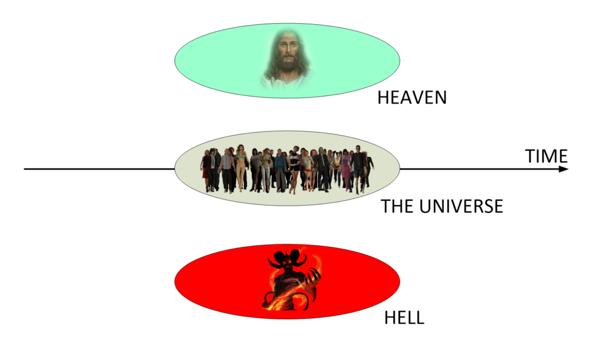
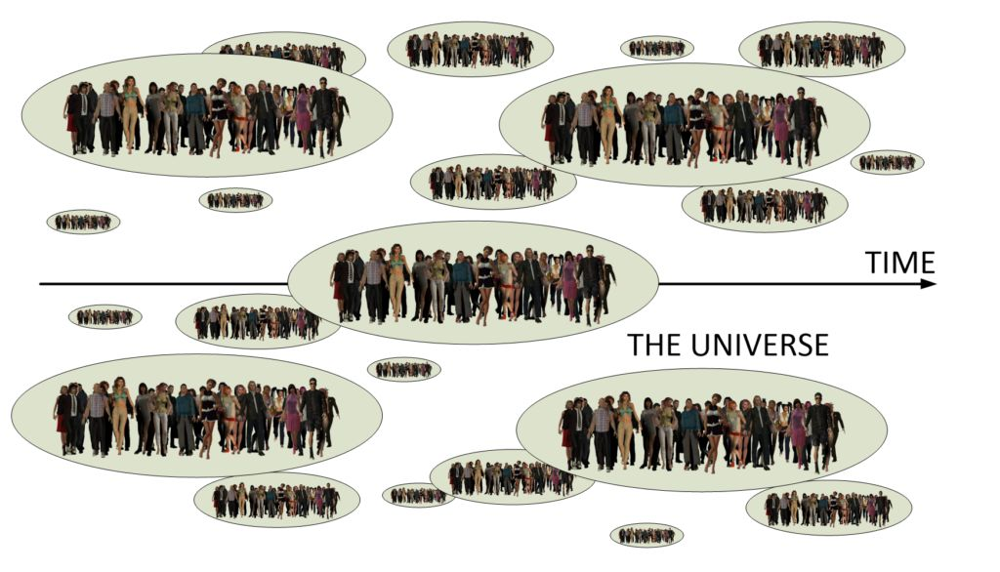
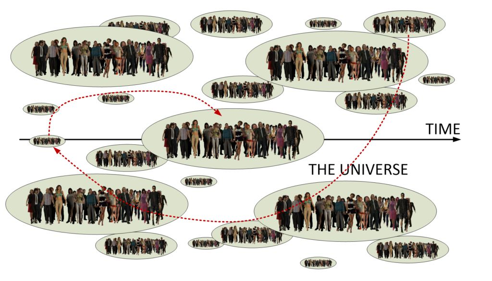
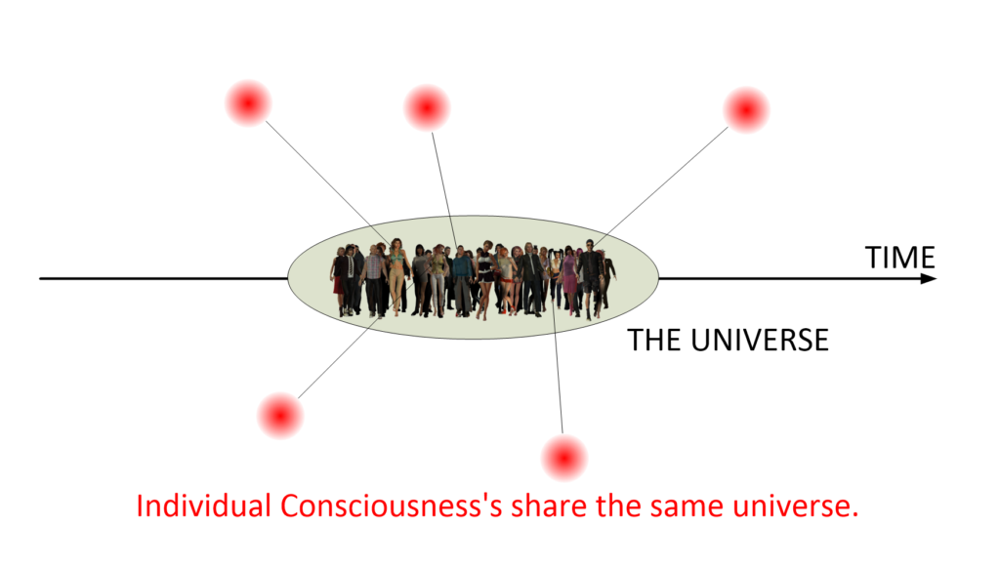
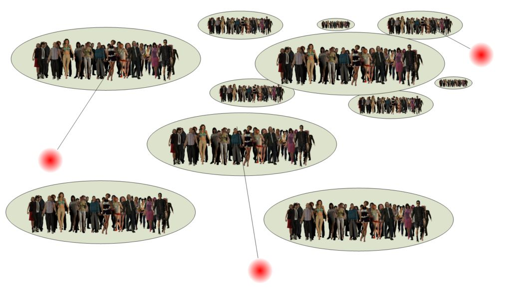
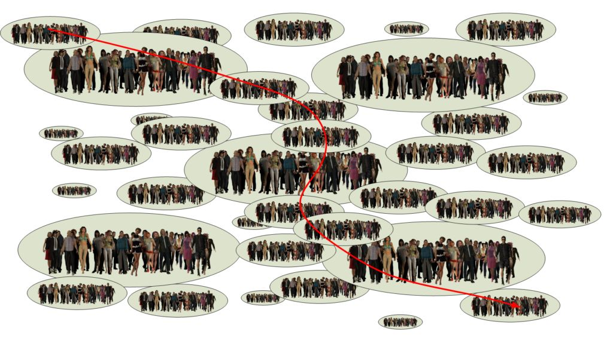

When people discover what my role was in MAJestic, one of the first things that they ask me is whether or not I can “tell them the secrets of the universe”. After all, I was intimately entangled with another very ancient, and highly technology advanced species. Certainly, they argue, I must have learned something… Well, in a way, they are correct. I actually DID learn a thing or two. The problem is that the frame of reference is so unlike what we humans think that it sounds fantastical.
When I tell them this, most everyone says “try me”.
Well here is my post on this matter. The first thing that everyone must understand is that just about everything that we know, what we think and our assumptions about everything is pretty faulted. It is all pretty much false, and following our preconceived assumptions will lead us into confusion and into dead-ends.
What we think the Universe is…
Most people, not all, but most believe that the universe is shared. What we sense, either naturally or through our machines, describe our “known” universe. We measure changes to our universe by a device known as “time”. We consider it a “straight arrow” that cannot be undone.
Further, depending on our religious persuasions, we add elements of the “unseen” to this universe. These “unseen” elements can include Heaven, Hell, and various “planes of existence”. It’s all sort of like this. Look familiar?

This is the traditional view of what the universe is. While there are variations from person to person, the concept of what it is pretty much stays the same.
Baptists, Methodists, and other Christians consider Heaven to be the “reward” for a God-Fearing life. Other religions, such as Islam and Buddha, describe it slightly differently and utilize different terms and avenues, but all pretty much follow the duality model: good vs. bad.
There are outliers, such as Satanists, Wicca, and their ilk that describe the unseen universes differently. They ascribe benefits to Hell rather than to Heaven. They also conjure up different avenues of behavior and rules. Never the less, they also follow the duality model.
Revisions to the Traditional Understandings
This model of the universe worked pretty good for a long, long time. We lived in a Newtonian world were science was formed through observation. What ever we observed within our reality, that defined the limits of our universe. And it worked well.
We developed fluid mechanics, airplanes, high-rise skyscrapers, radio and television. We put a man (actually a couple) on the Moon. Indeed, we thought that we had it all figured out.
That is, however, until we started to probe deeper and deeper into the secrets of our reality. We studied and peered deeper and deeper into what an atom is, and discovered that it wasn’t the smallest thing in the universe. In fact we discovered that it was made up of even smaller things…!
And when we peered into what made up these smaller things, we discovered that there were even much smaller things that they were made up of. We kept on digging, deeper and deeper. And as we dug down, we came up and made some very stunning discoveries.
We discovered the basement foundation from which our universe is made from. We call this understanding, and this area; “Quantum Physics”.
As we explored this “foundation” or “basement” we “unlocked” some secrets of the universe. In fact, much of what we discovered was so very strange that many in the sciences refused to accept it.
We discovered that reality; or our universe can be changed by thought. We discovered that time doesn’t really exist at all. We discovered that there are other world-lines and other time-lines, we discovered that anything and everything was possible. At which we then discovered that Heaven and Hell could actually exist.
People have tried to incorporate these discoveries in different ways to their understanding of the universe.
- Some refused to accept it; like the MWI. “It doesn’t exist because it is not yet proven to my satisfaction”.
- Others tried to incorporate it into their flawed understanding of the universe – creating a “Frankenstein” or bastardized model.
- Others tried to accept it, but found themselves hampered as there have not yet been any kind of unified agreement as to what our reality is.
Many people, follow one or more of these behaviors – depending on their experiences, knowledge, and tendency to resist new information and change.
Here is (for instance) how many people try to incorporate the MWI (Many Word Interpretation) into their understanding of what the universe is…

Consider “Time Traveler” Mr. John Titor
When “time traveler” Mr. John Titor entered our world-line, people naturally tried to fit his narrative and his story to their understanding of what reality is. (The ruling is still “out” whether or not he was a “real” time traveler. Here, we use him as an example.) He claimed that he had a “time machine” and could visit these alternative world-lines along the time track. In so doing, visiting them like we would take a boat and go from island to island, visiting and exploring.
It would look something like this…

I do want to tell you, the reader this. Indeed, this type of travel, as described by John Titor, is indeed possible.
However, it is very limited. In his description of his dimensional displacement machine, it is clear that the VGL sensors and the gravity sensing is very crude. Obviously, his travel was limited to fifth-dimensional travel. As such, he would only be able to travel in his existing body to meet other on other world-lines. (That is a fundamental limitation of fifth dimensional transport.)
But, you know, you don’t have to limit yourself to that kind of travel.
That is because, he was forced to travel in that way due to the limitations of his equipment. So, from his point of view, it only looked that way (well, actually… he probably did understood the real nature of the universe.). To travel and maintain the reality of our universe, you need to understand it, and what it actually is.
We do not share a reality
Firstly and most importantly, what we see is NOT at all what there is.
The universe where we all share one universe; one reality is not true. We are not all individual consciousnesses all sharing one physical universe. It is not like this…

This understanding is faulty. This is not the way things work, and it is certainly not the way that the MWI operates.
Our physical world operates at the pleasure of our consciousness.
It is not the other way around; it is not where there is this big universe, and we are trapped within it. We do not join others when we are born and share the same universe. We do not look at others and see the physical manifestation of their consciousnesses. Instead, each consciousness operates within it’s very own, unique reality.
SECRET #1
The rule is this; there is only one consciousness for each reality. Having another consciousness within the reality that your consciousness occupies is exceedingly rare.
The rule is this; there is only one consciousness for each reality.
As such, the true nature of our universe looks quite different from what most people assume it to be…

Thus, the big “secret of the universe” is that the universe is not at all what it looks like.
The universe is a near infinite number of realities. We, our consciousness, moves in and out of those realities. This movement is perceived as time.
- “Time” is the apparent movement through realities.
- The direction of movement (selection of reality) is defined by our consciousness. It is determined by thought.
- Thoughts steer our consciousness in and out of the various realities.
Our universe is defined by our consciousness. What we think about creates our reality. We can act upon those thoughts or not, but they will tend to shape what will happen to the reality that surrounds us.
What time actually is
Time is the perception that consciousness has to the changes within our reality. Remember, thoughts alter our reality. It is not only our consciousness, but the consciousnesses of others. While they might not share our reality their thoughts do have the ability to alter the changes that influence the reality we exist in.
Now…
Reality is not fixed. It is constantly changing. It is changing moment to moment. Each moment that change in our reality is perceived as “time”.
This is what “time” really is…

SECRET #2
This is thus another 'secret of the universe". Time does not exist. Not mathematically, and not physically. It is the perception of our own individual consciousness as it moves from one "bubble of reality" to another.
Think of a movie reel. It consists of individual photos that are strung together. By changing the images you obtain the illusion of movement. That is what time is.
- Each world-line in the MWI is like a frame in a movie.
- The movement of the frames is viewed by consciousness as “time”.

Putting it all together
Since we now know how the universe works; we can now understand how one can conduct both “world-line” travel and a sub-set of it; “time travel”.
The best and “cleanest” way to conduct world-line travel is to control your thoughts and actions. You think good things, and your life eventually unfolds in the direction that your thoughts lead it towards. This will take time depending on your personal discipline as well as the thought influences of the consciousnesses (associated with the “quantum shadows”) surrounding you.
You can also utilize “brute force” physical methods to bend the reality that you inhabit. This is the method as described by Mr. John Titor, and the method that I describe as the “dimensional portal” that I utilized as part of my entry into MAJestic way back in 1981.


And let’s not leave out Mr. John Titor…

But… as so very exciting as this all is, the fact remains that this is all a very crude way to traverse the MWI.
The better way to traverse the MWI, provided that it is in alignment with our soul’s individualized objectives, is to conduct 7th dimensional egress. Not the more limiting 5th dimensional techniques. I discuss this in other posts…
Here, we utilize a more powerful technique. Instead of moving an entire physical body (with the consciousness) to a new world-line, we only move the consciousness. The consciousness then travels the MWI and occupies the associated physical container as necessary.

There are, of course, limitations and variations. Some individuals elect to migrate physical bodies and vehicles using this technology. That is a rather crude way of utilizing this technology, but it does have it’s advantages. What ever they may be.
Overall, you can easily identify 7th dimensional migration by the inability for the observer to witness entry or egress on to a world-line.
7th dimensional egress is noted by an inability to observe the action or entering or leaving reality.

Of course, when we start talking about world-line travel, especially the migration of consciousness, we need to understand what it is, and how it manifests. here is some very good discussions on this subject.


A great You-Tube Video
From an influencer…
Check out this YouTube link on the non-locality of the consciousness... https://www.youtube.com/watch?v=EXOX3RCpEbU Sounds like exactly the way you describe it.
Conclusion
When I am asked about the “secrets of the universe” I must admit that I do know quite a bit. I understand how things work on many levels, I understand the nature of man, of soul, and of the Heavens. I understand of our reality, and our place in the universe. But, you know, all this is meaningless unless you first understand that everything that you know, what you think you know, and what you are taught in most schools is wrong. It is wrong, wrong, wrong!
Of course, no one wants to hear this.
They don’t exist. Well, at not at least along the lines of popular literature and the on-going narrative.
People want to hear things that agree with their personal views, and their own personal understandings of the universe. They want to hear that you can buy your way into Heaven through charitable donations. They want to hear that being popular, famous or wealthy are elements of success. They want to hear that scientists have full control over our lives and fully understand the universe. They want to hear about Reptilians, and star children that will teach us the ways of the Heavens…. oh, yeah.
There are no Reptilians, or star beings. You might not want to hear this, but it is the truth.
There is no spiritual beings that is going to show you the way through “magic crystals” (that you can buy on-line for only $99.98.). There isn’t any shape-changing Reptilians that are secreting directing the United States government towards a one-world government. Nope. That idea is from certain very rich oligarchs. Extraterrestrials couldn’t care less.
Seriously. They don’t give a flying fuck about that. Seriously.
OK. Later on I discuss some of these more “physical” issues that everyone is concerned about. I will cover Global warming or global cooling….(what ever is the popular narrative at the time). I will cover bases on Mars, and technology transfer. I will cover biological sampling (you all refer to them as “abductions”). I will cover various OOPARTS and of course, why humans are going (apparently) “bat-shit crazy” right now (It’s a sentience sorting behavior.)
All that will come in time. But, not today.
MAJestic Related Posts – Training
These are posts and articles that revolve around how I was recruited for MAJestic and my training. Also discussed is the nature of secret programs. I really do not know why the organization was kept so secret. It really wasn’t because of any kind of military concern, and the technologies were
MAJestic Related Posts – Training
These are posts and articles that revolve around how I was recruited for MAJestic and my training. Also discussed is the nature of secret programs. I really do not know why the organization was kept so secret. It really wasn’t because of any kind of military concern, and the technologies were way too involved for any kind of information transfer. The only conclusion that I can come to is that we were obligated to maintain secrecy at the behalf of our extraterrestrial benefactors.


MAJestic Related Posts – Our Universe
These particular posts are concerned about the universe that we are all part of. Being entangled as I was, and involved in the crazy things that I was, I was given some insight. This insight wasn’t anything super special. Rather it offered me perception along with advantage. Here, I try to impart some of that knowledge through discussion.
Enjoy.


MAJestic Related Posts – World-Line Travel
These posts are related to “reality slides”. Other more common terms are “world-line travel”, or the MWI. What people fail to grasp is that when a person has the ability to slide into a different reality (pass into a different world-line), they are able to “touch” Heaven to some extent. Here are posts that cover this topic.


John Titor Related Posts
Another person, collectively known by the identity of “John Titor” claimed to utilize world-line (MWI egress) travel to collect artifacts from the past. He is an interesting subject to discuss. Here we have multiple posts in this regard.
They are;